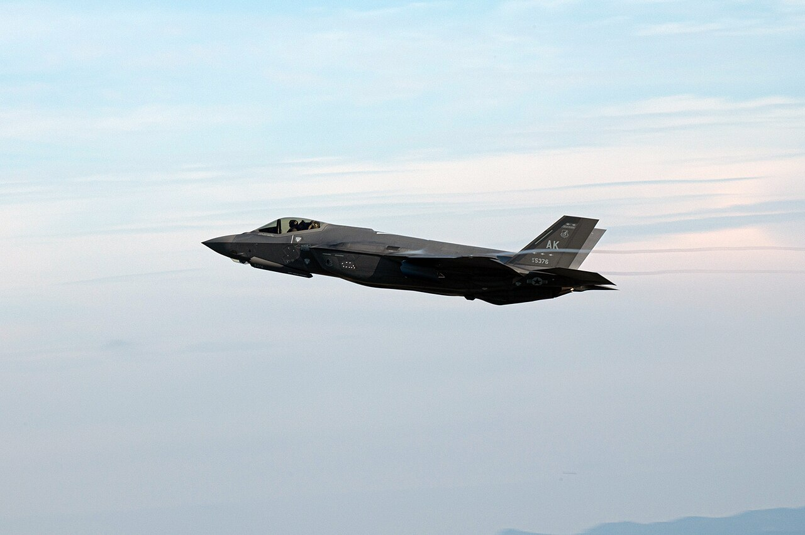
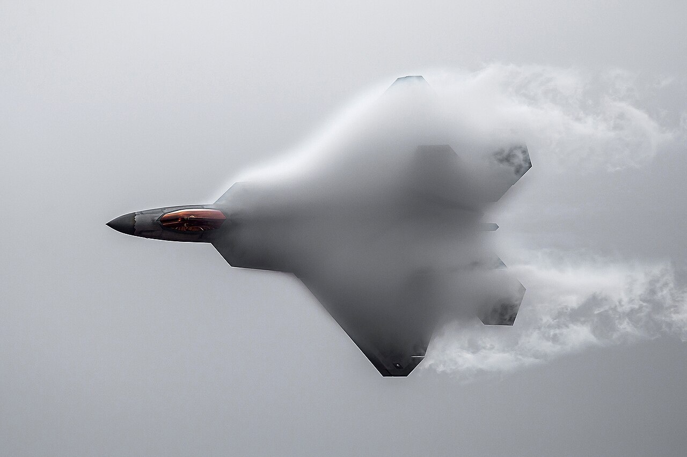

HomeLockheed Martin
Manufacturer United States
Lockheed Martin.
An American aerospace company. This atlas features two of its best-known modern fighter aircraft, each with its own role and development story.
Step 02 Choose an aircraft
Aircraft overview
Select an aircraft tom open its model and key information.
Multirole 5th generation

F-35 Lightning II
A multirole aircraft with three variants designed for different operating environments.
FIRST FLIGHT
2006
VIEW DETAILS
Air superiority 5th generation

F-22 Raptor
Designed with a focus on air superiority and enhanced situational awareness.
FIRST FLIGHT
1997
VIEW DETAILS
Photo credits: F-35A — U.S. Air Force / A1C Jose Miguel Tamondong (public domain) · F-22 — U.S. Air Force / Trevor Cokley (public domain).